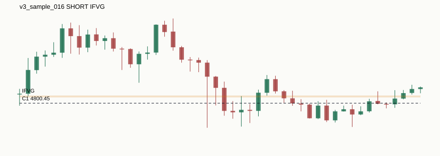

Research-only candidate windows. Not signals, not validation, not live trading.

| sample_id | v3_sample_016 |
|---|---|
| symbol | XAUUSD |
| anchor_timestamp | 2026-04-20T18:00:00+00:00 |
| direction | SHORT |
| c1_source | DAILY_SWING |
| c1_timeframe | D1 |
| c1_priority | HIGH |
| c1_level_type | SWING_HIGH |
| c1_level_price | 4800.45 |
| c1_swing_time | 2026-04-02T00:00:00+00:00 |
| c1_known_at | 2026-04-07T00:00:00+00:00 |
| sweep_timestamp | 2026-04-20T16:40:00+00:00 |
| sweep_price | 4824.04 |
| reaction_zone_type | IFVG |
| reaction_zone_low | 4802.31 |
| reaction_zone_high | 4802.92 |
| reaction_zone_detected_at | 2026-04-20T05:20:00+00:00 |
| round_level | 4800.0 |
| round_distance_pips | 4.5 |
| liquidity_confluence_config | CONFIG_B_DAILY_M15_SWEEP |
| liquidity_confluence_distance_pips | 8.9 |
| entry_level_price | 4802.61 |
| entry_level_source | IFVG |
| session | OTHER |
| chart_path | charts/v3_sample_016.svg |
| html_path | |
| reason_codes | C1_AGED_D1_OR_H1_SWING|C1_SWING_HIGH_SWEPT|C5_SHORT_FROM_HIGH_SWEEP|C2_IFVG_LAST_COMPLETED_PRE_ANCHOR_RETEST|ANCHOR_CANDLE_EXCLUDED|C3_NUMBER_THEORY_CONFLUENCE|C4_CONFIG_B_DAILY_SWING_M15_SWEEP|C5_DIRECTION_INFERENCE_UNAMBIGUOUS_BEYOND_SWEEP |
| limitations |